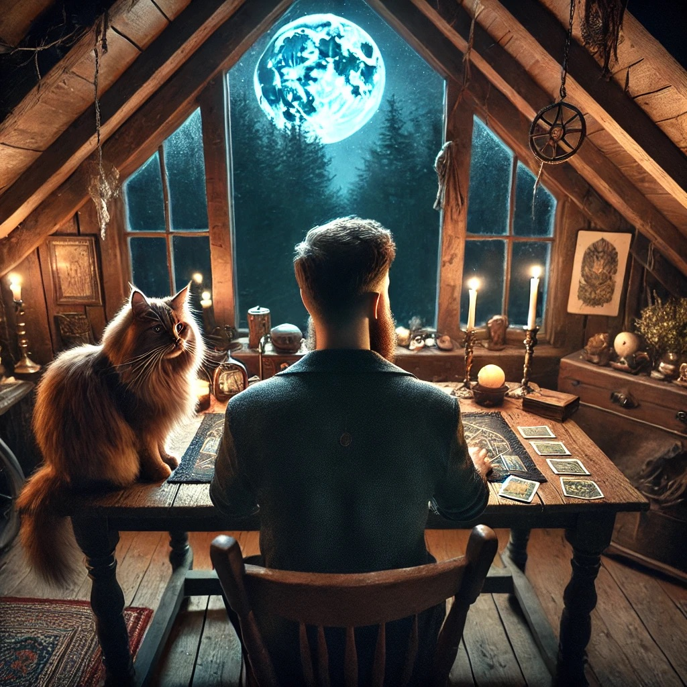

La Flamme de l'Ombre vous propose des séances de cartomancie pour vous guider dans divers domaines de votre vie.
1. Consultez les créneaux disponibles via le bouton « Créneaux disponibles ». Si un créneau vous correspond, vous pouvez passer à l'étape suivante. Note : Réserver via ce lien seul ne validera pas votre réservation, seule la confirmation de paiement le fera.
2. Choisissez la séance qui vous convient et cliquez sur le bouton associé. Payez via PayPal ou par carte.
3. Vous serez automatiquement redirigé(e) vers le calendrier pour réserver votre créneau.
4. Envoyez-moi un email à laflammedelombre@gmail.com avec le numéro de téléphone sur lequel je dois vous appeler.
Créneaux disponiblesLes sessions se font par téléphone ou visio, et sont possibles en réel pour les personnes proches de La Ciotat.
Note : J'évite les domaines de la santé et ne fais pas de contact avec les défunts. Mes capacités se concentrent pour l'instant sur la cartomancie.
Réserver uniquement si je suis actuellement en live sur TikTok.
Question live TikTok - 3 EURService de questions par mail : Posez jusqu'à 3 questions par mail. Idéal pour les plus timides ou ceux qui préfèrent éviter les consultations en direct. Réponse sous 48h.
Questions par mail - 12 EUREnvie de laisser un pourboire ? Si mes services vous ont aidé et que vous souhaitez soutenir mon travail, vous pouvez laisser un pourboire du montant de votre choix. Merci infiniment pour votre générosité !
Laisser un pourboire© 2024 La Flamme de l'Ombre. Tous droits réservés.